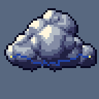
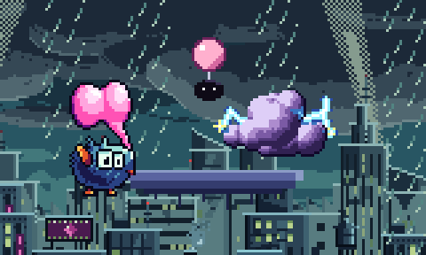
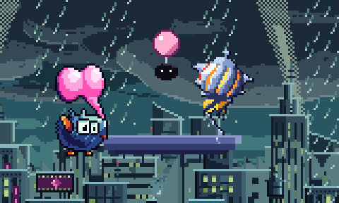
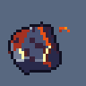
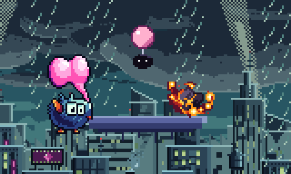
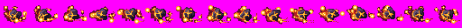
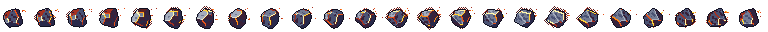
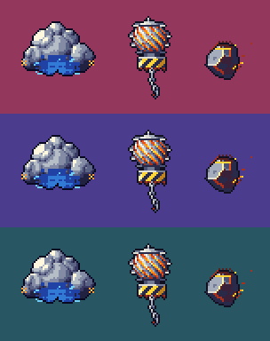

Skip-rope squall
Storm cloud. Billows overturn, the belly charges blue, the rope strikes once per loop under the base.



Three hazards, two palettes. First drafts beside the final pass. Nothing here is wired into the game.
Storm cloud. Billows overturn, the belly charges blue, the rope strikes once per loop under the base.


Turbine roof vent. Helical vanes turn, furnace slots glow, the chain swings below with lag.




Tumbling coal. Facets keep their place, ember cracks breathe, sparks trail into the wake.




One frame of each kind on a flat sky colour: dusk, moon, storm (top to bottom), two times size.

Gum Trip moving hazards, final draft sheets. Measured by draw_moving_hazard_final.py from the sheets it wrote.
Tiles are 16 x 16. Raw = non-empty tiles over all frames; unique = distinct after removing exact duplicates;
with flips = distinct when horizontal and vertical mirror copies also count as duplicates.
Loop seam = pixels that differ between the last frame and frame 0, beside the same count for the other
neighbouring frame pairs (mean and largest). A seam inside that range means no pop.
Frame size 48 x 48 px, 24 frames in one row (sheet 1152 x 48), 4 ticks per frame (15 per second), loop 96 ticks = 1.60 s
Palette "storm": 14 of 15 colours used in this sheet (indices 1..15), plus transparent
Sprite columns 3 (16 px wide), 3 tiles tall
Tiles raw 216, unique 212, unique with flips 211
Opaque bounding box over all frames x 2..47, y 3..40
Hit box x 7..42, y 8..32 (36 x 25), relative to the frame: the cloud body, 4 px inside its edge; the arc below the base and the pin sparks do not hurt
Loop seam 380 px; other neighbouring frames mean 375 px, largest 611 px
Gif frame time 70 ms (game 66.7 ms; gif timing has 10 ms steps)
Flash: one strike per loop, at frame 17, shown for 4 ticks (67 ms). One loop is 96 ticks, so 0.625 flashes per second per cloud (limit asked: under 3).
Flash size: 111 pale-cyan or white pixels in the strike frame = 4.8 % of the 48 x 48 frame, 11.3 % of its opaque pixels. No other frame has more than 43. The frame before has 12, the frame after 43: never two bright frames in a row.
Charge: frames 4..16 build (52 ticks), frame 17 strikes, frames 18..20 fade, frames 21..23 and 0..3 rest.
Several clouds on screen: start them at the same loop phase or at phases at least 8 frames (32 ticks) apart, so that strikes of different clouds never land on consecutive frames. With 2 clouds that is at most 1.25 flashes per second.
Frame size 32 x 48 px, 16 frames in one row (sheet 512 x 48), 4 ticks per frame (15 per second), loop 64 ticks = 1.07 s
Palette "hot_metal": 14 of 15 colours used in this sheet (indices 1..14), plus transparent
Sprite columns 2 (16 px wide), 3 tiles tall
Tiles raw 96, unique 90, unique with flips 90
Opaque bounding box over all frames x 4..28, y 1..47
Hit box x 8..24, y 5..21 (17 x 17), relative to the frame: the globe, 1 px inside its steel; fins, collar and chain do not hurt
Loop seam 261 px; other neighbouring frames mean 287 px, largest 370 px
Gif frame time 70 ms (game 66.7 ms; gif timing has 10 ms steps)
No flash: the slots glow steadily; brightness moves with the vanes only.
Spin: 2 vane pitches per loop (10 vanes), so the globe art repeats after 8 frames; the rocking body and the chain repeat after 16.
Frame size 32 x 32 px, 24 frames in one row (sheet 768 x 32), 3 ticks per frame (20 per second), loop 72 ticks = 1.20 s
Palette "hot_metal": 13 of 15 colours used in this sheet (indices 1..15), plus transparent
Sprite columns 2 (16 px wide), 2 tiles tall
Tiles raw 96, unique 96, unique with flips 96
Opaque bounding box over all frames x 0..30, y 6..29
Hit box x 5..20, y 11..25 (16 x 15), relative to the frame: the coal, 2 px inside its widest tumble; glow and sparks do not hurt
Loop seam 212 px; other neighbouring frames mean 207 px, largest 241 px
Gif frame time 50 ms (game 50.0 ms; gif timing has 10 ms steps)
No flash: ember cracks breathe twice per loop (1.67 per second), each crack with its own phase; yellow or pale-yellow pixels per frame 1..28 of 1024 (2.7 % at most).
Total unique tiles for the three kinds: 212 + 90 + 96 = 398 (with flips 397). First drafts: 139 + 96 + 64 = 299.
Palettes: 2 for the three kinds. "storm" (A) and "hot_metal" (B and C). RGB after 5-bit rounding:
storm 8,8,33 33,33,66 57,57,99 90,99,132 132,140,165 181,189,198 231,231,214 255,247,222 33,66,165 49,123,214 115,206,247 198,247,255 255,255,255 255,239,115 255,156,49
hot_metal 16,16,33 41,41,74 74,82,115 115,123,148 165,173,189 222,222,214 255,255,239 90,33,33 165,49,33 231,82,24 255,140,24 255,214,57 255,247,173 189,132,33 57,33,57
Mood colours in on_moods_2x.png: Dusk (148, 55, 92), Moon (76, 60, 142), Storm (40, 86, 99) = most common colour of the middle band of plane_
Gif background (88, 104, 128).